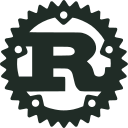

00
Freedom 0
Run the program for any purpose.
The fundamental liberty to execute the software however you choose, free from commercial lock-in, vendor restrictions, or surveillance gates.
A student-led community at the Faculty of Engineering & Technology, JAIN (Deemed-to-be University), exploring GNU/Linux, digital ethics, open tools, and collaborative software freedom under FSMK.
 Kernel 6.x
Kernel 6.x
$ whoami
jain-glug-contributor
$ git clone https://glugs.fsmk.org/jain-glug.git
Cloning into 'jain-glug'...
$ sudo apt install curiosity collaboration freedom
[OK] 4 Essential Freedoms configured
$ ./run-glug.sh --mode=community
Ready: Knowledge is meant to be shared freely.
 Arch
Arch Git
Git Python
Python
Rust NeovimLinux Kernel
NeovimLinux Kernel GNU Project
GNU Project Debian GNU/LinuxArch Linux
Debian GNU/LinuxArch Linux Ubuntu
Ubuntu FedoraGit VCSPython 3
FedoraGit VCSPython 3 GNU BashNeovim
GNU BashNeovim Blender 3D
Blender 3D GIMP
GIMP Inkscape
Inkscape Docker
Docker Firefox
Firefox PostgreSQL
PostgreSQL01 / PHILOSOPHY & ETHICS
Software freedom is about individual autonomy, transparency, and the right to inspect, adapt, and share technology without artificial restrictions.
Run the program for any purpose.
The fundamental liberty to execute the software however you choose, free from commercial lock-in, vendor restrictions, or surveillance gates.
Study how it works and modify it.
Direct access to the source code, giving students and engineers the ability to look under the hood, learn real mechanics, and tailor tools to their needs.
Share copies to help your community.
The freedom to pass along software to classmates and friends, ensuring knowledge and computing access are not hoarded behind paywalls.
Distribute modified versions.
The right to share your improvements and fixes with the wider ecosystem, empowering the entire community through collaborative contributions.
A Question of Liberty, Not Price
Free software refers to freedom of use, study, modification, and redistribution. It treats computer users not as passive consumers, but as empowered creators with full control over their computing environment.
Proprietary applications hide implementation details behind closed binaries. Free and open software allows students to trace kernel calls, inspect compilers, debug network stacks, and become capable engineers.
When educational and public software is open, security can be independently verified. Free software stands against vendor dependency, planned obsolescence, and predatory data collection.
02 / STATEWIDE MOVEMENT
Free Software Movement Karnataka (FSMK) works to foster digital literacy, spread free software tools, and encourage collaborative learning in educational institutions across the state.
Run by volunteers — including software professionals, researchers, students, and educators — FSMK partners with college groups to help students understand the value of open source, contribute to public repositories, and protect digital rights.
Guiding students across 20+ engineering and science institutions in Karnataka to build self-sustaining user groups.
Conducting technical sessions on modern development workflows, Linux administration, and system tools.
Advocating for local language computing, open educational resources, and transparent digital infrastructure.
03 / PRACTICAL LEARNING
We focus on practical, peer-driven activities that help students build real competence with open source tools.
Helping students install and configure GNU/Linux distributions (Debian, Fedora, Ubuntu, Arch) safely alongside existing systems or in virtual machines.
Linux
Debian
Arch
Practicing shell commands, Bash scripts, Git version control, branch management, and modal editors like Neovim for fast terminal workflows.
Git
Bash
Neovim
Guiding students through reading public codebases, submitting bug fixes, opening pull requests, and working on collaborative student projects.
Python
Rust
Docker
Holding discussions on digital surveillance, data autonomy, copyleft vs permissive licensing, and the role of open standards in society.
GNU
Firefox
Exploring vector graphic design in Inkscape, photo editing in GIMP, and 3D modeling and animation in Blender without proprietary subscriptions.
Blender
Inkscape
GIMP
Providing a relaxed space where seniors mentor juniors, share troubleshooting steps, review code, and welcome newcomers without intimidation.
Ubuntu
Postgres
Community-owned technologies we practice and recommend.
JAIN (Deemed-to-be University)
Visit JU-FET Official Portal04 / CAMPUS CONTEXT
The Faculty of Engineering & Technology (JU-FET) provides an academic setting that encourages experiential learning, student-led tech communities, and practical skill development.
JAIN GLUG provides an informal, inclusive space within campus where students can explore GNU/Linux and open tools, collaborate on independent software projects, and learn beyond the classroom syllabus.
Computer Science, Information Science, Electronics, Mechanical, Aerospace, and all branches are welcomed equally.
Peer assistance for Linux dual-boot installations, system maintenance, and configuring developer environments.
Discussions and workshop topics are selected based on real student interest and open technological curiosities.
Encourages students to contribute to public open source projects, build verifiable portfolios, and learn teamwork.
05 / THE PEOPLE
JAIN GLUG is organized by student volunteers under the mentorship of JU-FET faculty and FSMK coordinators.
Faculty of Engineering & Technology, JAIN University
Provides departmental guidance, facilitates lab access, and advises on campus collaboration for GLUG initiatives.
Faculty of Engineering & Technology, JAIN University
Supports student outreach, workshop logistics, and institutional alignment with open source learning.
JU-FET Student Team
Coordinates chapter activities, plans meetups, and liaises with the FSMK campus network.
JU-FET Student Team
Prepares practical workshop materials, guides Linux installs, and curates learning resources.
JU-FET Student Team
Manages communication channels, welcomes newcomers, and assists first-time participants.
Assists newcomers with bootable media and troubleshooting Linux setups.
Prepares visual graphics using Inkscape/GIMP and documents session notes.
Supports beginners with command line fundamentals and development tools.
06 / UPCOMING ROADMAP
As a newly organized campus chapter, our schedule of hands-on workshops, install drives, and tech discussions is currently being prepared for the upcoming term.
A hands-on session to help students safely configure and dual-boot a GNU/Linux distribution (Ubuntu, Debian, or Fedora) with guidance from volunteers.
Practical introduction to the Unix terminal, essential shell utilities, and Git fundamentals for collaborative code management.
Lightning demos of modern open source stacks, discussions on digital freedom, and discovering ways to contribute to public software.
We welcome student suggestions for workshops, demonstrations, or reading circles.
07 / GET INVOLVED
JAIN GLUG is open to every student. Whether you have never used a command line before or already configure Linux, everyone is welcome.
Join our communication channels, say hello, and meet fellow learners interested in technology and open source.
Pick an area that sparks your curiosity — trying a Linux distro, learning Python, or modeling in Blender.
Share what you learn with peers, document what worked, and help new members navigate their first setups.
Connect through open platforms and community spaces.
Decentralized real-time chat for discussions, questions, and technical links.
#jain-glug:fsmk.org
Statewide discussions, articles, and announcements across all Karnataka GLUGs.
commune.fsmk.org
Public code repositories, website source code, and shared student projects.
gitlab.com/fsmk/glugs-website
Room updates, meeting reminders, and upcoming session notifications.
Official GLUG Updates
Common questions about JAIN GLUG and how to get involved.
No. JAIN GLUG is open to students of all engineering departments — Electronics, Mechanical, Aerospace, Civil, Biotechnology, and beyond. Free software tools like Linux, Git, Python, and Blender are useful across all technical disciplines.
Not at all. You can join with whatever computer or operating system you currently use. During our sessions, volunteers will gladly help you set up dual-booting or a virtual machine when you feel ready.
Never. JAIN GLUG is entirely free of charge. In accordance with the principles of Free Software Movement Karnataka, all sessions, materials, and mentoring are accessible without financial barriers.
Free software involves much more than writing code! You can design posters using Inkscape/GIMP, write and improve documentation, test software, help organize sessions, or simply participate in discussions.
JAIN GLUG is the campus student chapter associated with Free Software Movement Karnataka (FSMK). FSMK connects college GLUGs across Karnataka, organizes annual tech camps, and supports students with statewide community mentorship.
08 / REACH OUT
Have questions, want to join the group, or interested in collaborating on a session? Reach out to the student coordinators.
Faculty of Engineering and Technology (JU-FET)
Jain Global Campus, Jakkasandra Post, Kanakapura Road
Ramanagara District, Karnataka — 562112
JU-FET Campus Systems Lab / Academic Block
Kanakapura Road Campus
Fill out the form below to reach the student coordinators.